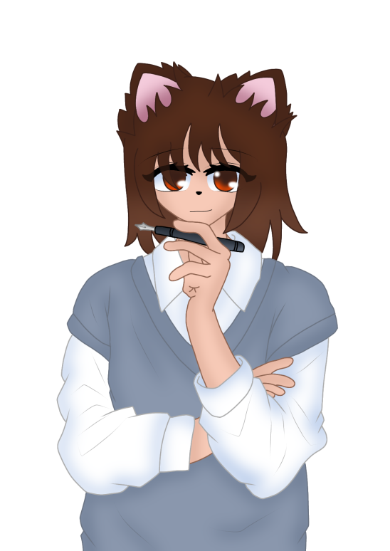

Profil
Cloé Wlodarski-Zminka, étudiante en BTS SIO au lycée Raymond Poincaré à Bar-le-Duc.
Passionnée par la création de sites et d'interfaces, j'aime transformer des idées en expériences visuelles claires et dynamiques.
Profil → Parcours scolaire → Compétences

Qui je suis, ce qui me motive et mon objectif.
Cloé Wlodarski-Zminka, étudiante en BTS SIO au lycée Raymond Poincaré à Bar-le-Duc.
Passionnée par la création de sites et d'interfaces, j'aime transformer des idées en expériences visuelles claires et dynamiques.

Études, expériences et étapes clés.
Ajoute ici ta formation, spécialité et établissement.
Ajoute ici un projet, une expérience ou une étape clé.
Ajoute ici la suite de ton parcours.

Mes technos et points forts.